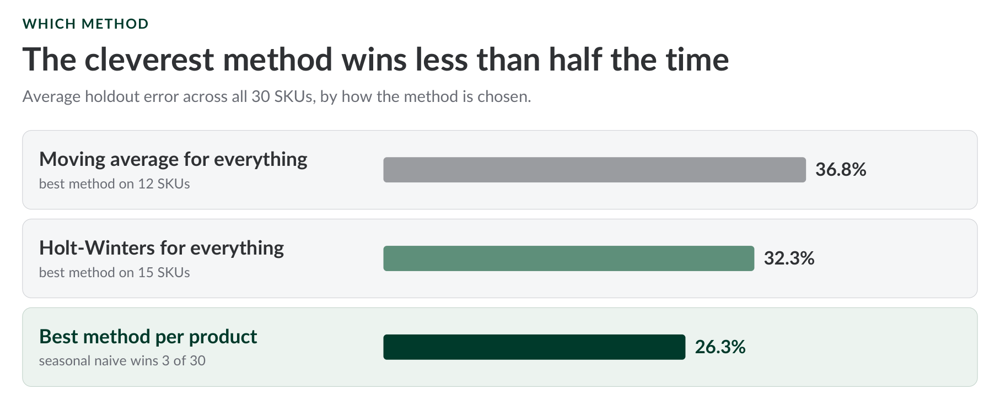
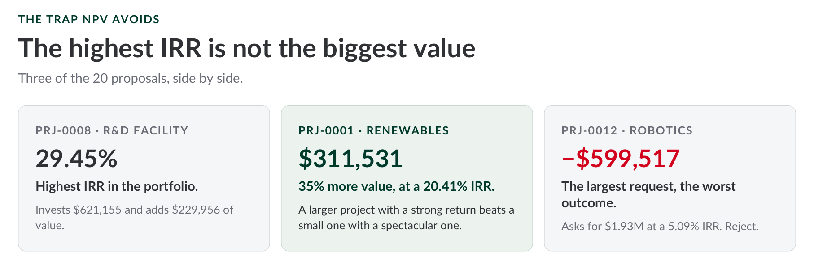
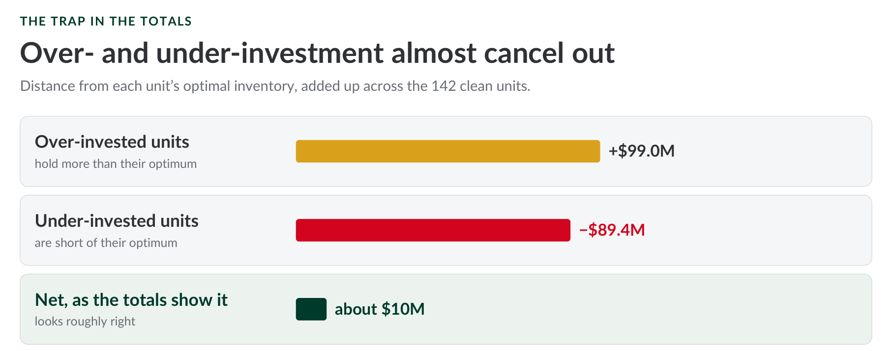

Demand forecasting
Small businesses often place purchase orders by gut feel, months before the sales happen, and nothing measures how reliable that estimate is. Simple forecasting methods, tested against your own recent sales history, show how far off each forecast really is, SKU by SKU. In a worked example of 30 SKUs, picking the best method per product cut average error from 32% to 26%, and sizing safety stock to that error freed roughly €46,000 of inventory.
Decision it enables: which products you can order straight from the forecast, which need extra buffer or human judgement, and how much safety stock each one really needs.
View the slides →|Read the blog →
Capital budgeting
Ranking competing capital requests by discounted cash flows, using Net Present Value as the single source of truth, replaces persuasive pitches with a consistent, auditable test: does this project add value to the firm, or does it just look good on a slide.
Decision it enables: which capital projects to fund, and which to reject, based on value created rather than IRR alone or who tells the best story.
View the slides →|Read the blog →
Working capital in inventory
Modeling the trade-off between carrying costs and shortage costs pins down an optimal inventory investment for every business unit, replacing firm-wide averages that quietly hide units holding far too much stock alongside units running dangerously lean.
Decision it enables: where to release cash tied up in excess inventory, and where to invest more to stop stock-outs eroding revenue.
View the slides →|Read the blog →